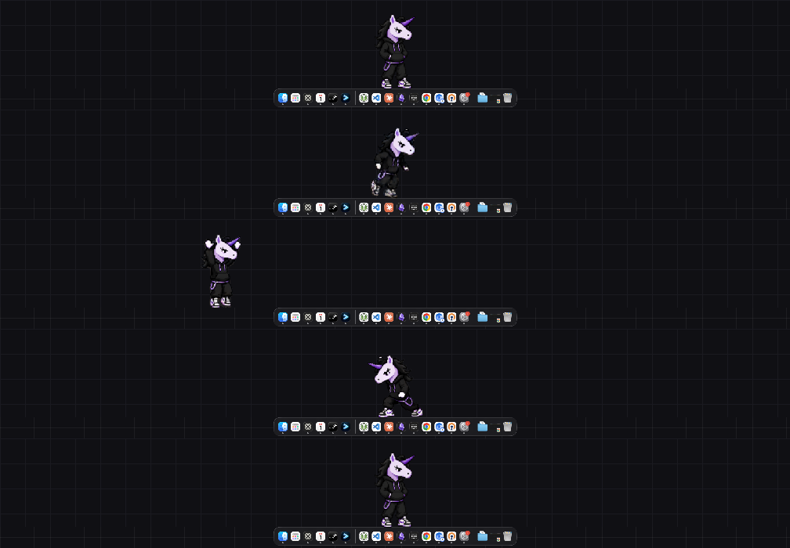
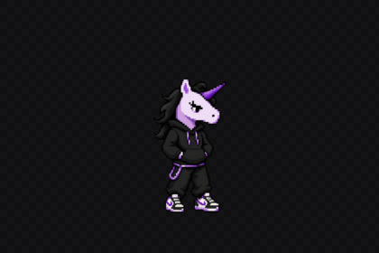
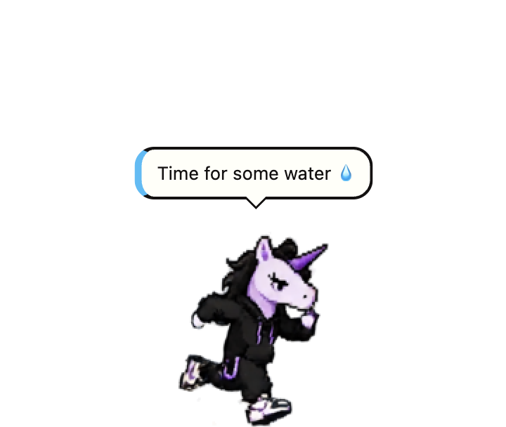
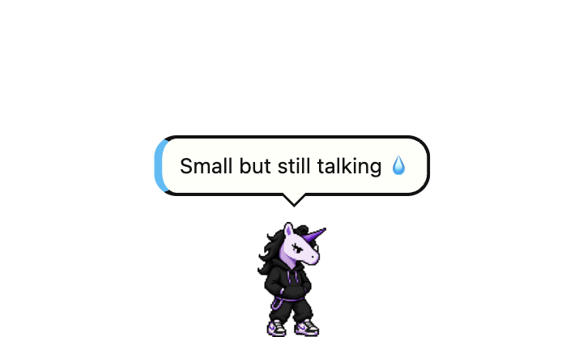
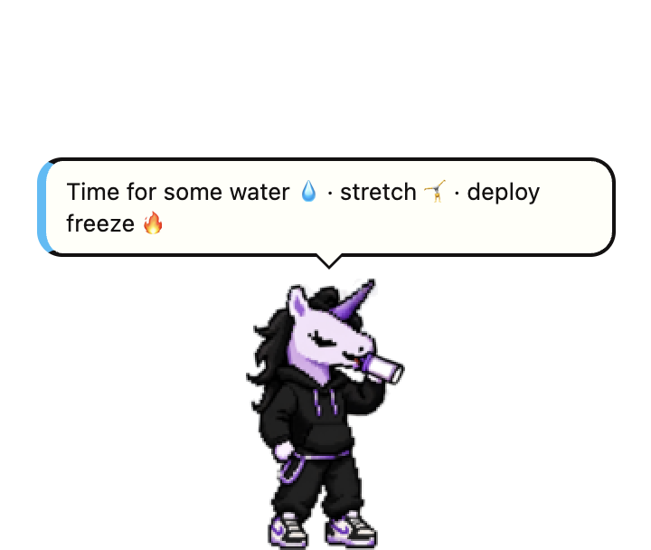
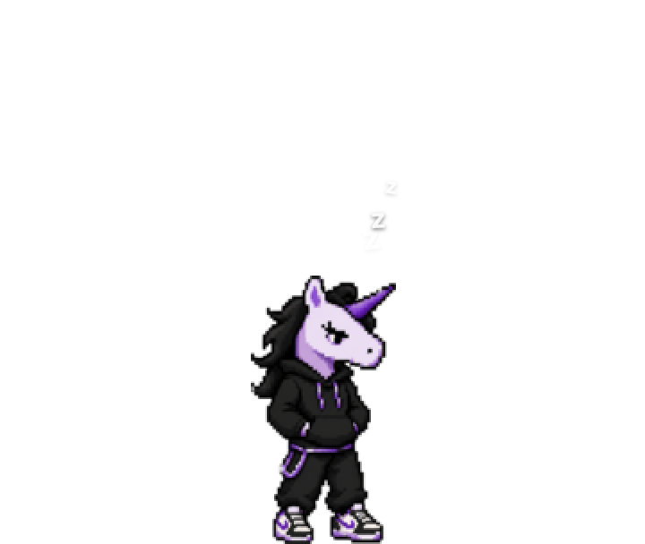

A pixel character that lives on your desktop. It runs along the bottom of your screen over whatever you are working on — and the whole team can make every installed pet speak.

.dmg and run normally.
Windows may still show SmartScreen once (More info → Run anyway); there is no Authenticode
certificate yet.
Install instructions →
Publish a message and every installed pet says it — once each, whenever that machine next wakes up. A notification with no timeout waits until you click it, so an announcement cannot be missed by looking away.

Drag it off the floor and it stays where you drop it, patrolling left and right at that height — and it is still there after a restart. Drop it near the bottom and it re-locks to the floor.

Small, medium or large, from the right-click menu. Only the character scales — the speech bubble keeps its type size, because a message you cannot read is not a message.

Water and stretch stay up until you tap ✓ or Snooze (one minute). Coffee and lunch close on their own. They are wall-clock deadlines rather than timers, so closing your laptop does not greet you with a backlog on wake.

Turn movement off and it settles down to sleep rather than freezing in place. Right-clicking the pet gives the same menu as the tray icon — which matters on Wayland, where the compositor swallows right-clicks and the tray is the only way in.

Every pet polls manifest.json on this site once a
minute. Publishing to it is how you reach everyone — and the easiest way needs nothing
installed:
Actions → Notify → Run workflow
Or from a checkout:
pnpm notify "Keycode on Fire 🔥" --tone warning --expires 24h